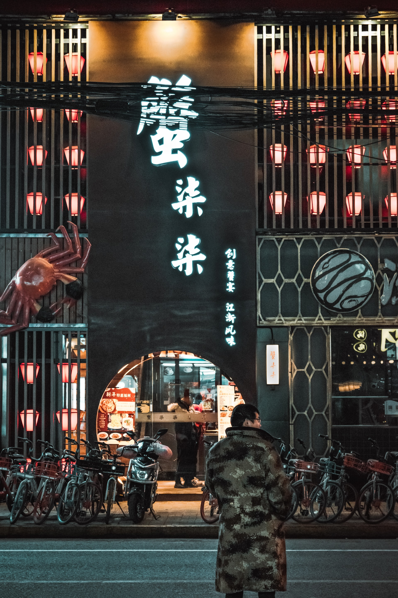
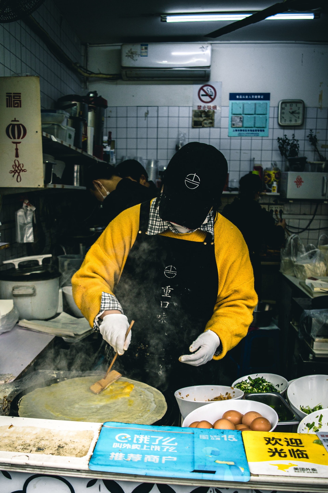
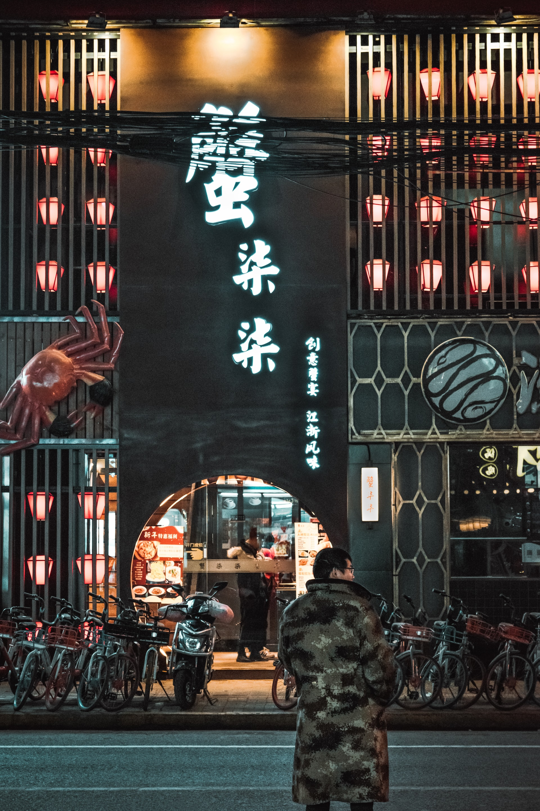
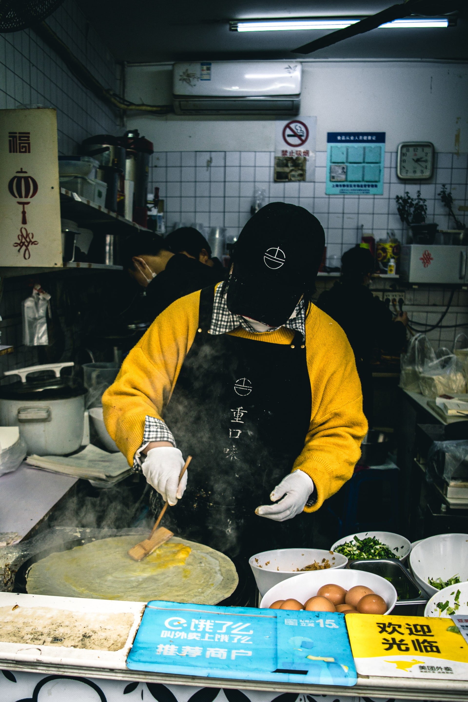

Xintiandi is a very popular entertainment district bang smack in the heart of Shanghai. If you are looking for dinner, drinks and a good night out in Shanghai, then this is where you should be! It really is one of the best things to do in Shanghai if you want a night on the town. That being said, you can expect a more laid back vibe here rather than the upbeat Nanjing Road.
Nanxiang Steamed Bun Restaurant in Old Shanghai serves up Shanghai's most famous dumplings and soup dumplings, is it a bit of a tourist trap?! Yes! However the dumplings are delicious and if you are visiting the old town it's a must, expect queues and avoid on weekends though! If you are in a hurry there is also a stand-up bar outside where you can order too.
Tianzifang is one of my favourite places to visit in Shanghai and amongst its labyrinth-like alleyways are lots of small boutique-style cafes, restaurants and bars and lots of street food to choose from. Make sure to go hungry as there are snack stalls at every corner. The street food is an eccentric mix of traditional Chinese food, western food and everything in between. Tianzifang is also known as the Soho of Shanghai, it’s an eccentric and artsy area in the city. It’s been transformed from old traditional shikumen stone houses which were former back streets of the French Concession to now housing cafes, bars, boutiques and design studios. It’s full of creativity even the old walls are used as canvases to display street art and sculptures, and with every turn you see something different. It’s also a great spot to visit for food as there is so much choice, so make sure to go hungry!
 


